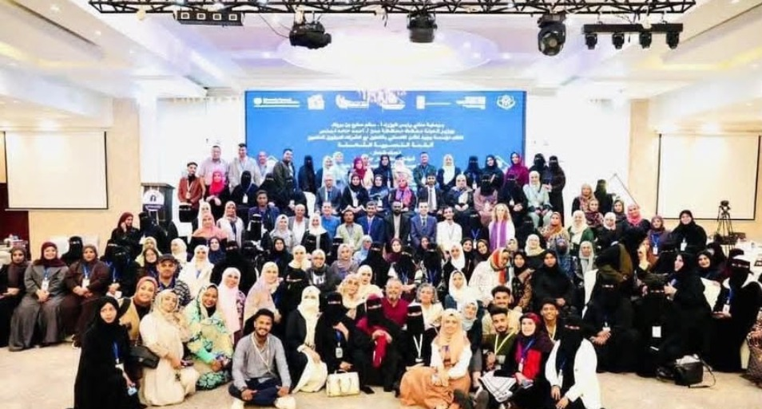

لقاء مجموعة عدن لمبادرة نساء اليمن للمصالحة الوطنية
الموضوع: لقاء مجموعة عدن لمبادرة نساء اليمن للمصالحة الوطنية
من ضمن مجموعة اللقاءات للمحافظات الجمهورية اليمنية الهادفة لتعزيز الاهداف ومباشرة العمل على ارض الواقع
المكان : محافظة عدن / منظمة وجود
التاريخ : 6/ يونيو / 2026م
عُقد في العاصمة المؤقتة عدن لقاء ضم قيادات نسائية وممثلات عن الأحزاب السياسية – فرع عدن، لمناقشة أنشطة التكتل اليمني للسلام ومبادرة نساء اليمن للمصالحة الوطنية، في إطار الجهود الرامية إلى تعزيز مسار الاستقرار وترسيخ مبادئ العدالة الانتقالية في اليمن واستُهل اللقاء بكلمة ترحيبية ألقتها الأستاذة مهى عوض، أكدت فيها أهمية تكثيف الجهود الرامية إلى بناء السلام وترسيخ العدالة الانتقالية باعتبارهما ركيزتين أساسيتين لتحقيق الاستقرار والتنمية المستدامة في اليمن. كما شددت على الدور المحوري للمرأة في بناء السلام والمشاركة الفاعلة في صياغة المبادرات المجتمعية الهادفة إلى إنهاء النزاعات وتعزيز التماسك الوطني وفي كلمته، أكد الأمين العام للتكتل اليمني للسلام، الأستاذ جمال الحضرمي، أن السلام يمثل خيارًا استراتيجيًا لا غنى عنه لتحقيق الأمن والاستقرار، مستعرضًا نبذة عن المبادرة النسوية للسلام وأهدافها ودورها في دعم جهود السلام في اليمن وأوضح الحضرمي أن المبادرة جاءت ثمرة سلسلة من اللقاءات والمشاورات المكثفة، إلى جانب النشاط المستمر الذي يقوده التكتل، مشيرًا إلى أن الجهات الرسمية لم تشارك في وضع أسس المبادرة، وإنما جرى إعدادها استنادًا إلى رؤى وتجارب نسائية ميدانية تسعى إلى الإسهام في بناء سلام مستدام وشامل كما استعرض عددًا من المبادرات والأنشطة التي نفذها التكتل في المجالات الرياضية والاجتماعية والتوعوية، والتي تم توظيفها كوسائل لتعزيز الحوار المجتمعي وخدمة أهداف السلام والتنمية وشهد اللقاء نقاشات جادة ومستفيضة من قبل المشاركات حول آليات العمل المستقبلية وسبل تنفيذ المبادرة، حيث تم الاتفاق على تشكيل لجنة مختصة تتولى إعداد آلية التنفيذ وخطة التحرك في المحافظات المختلفة، إلى جانب استكمال الهيكل التنظيمي للمبادرة واختُتم اللقاء في أجواء إيجابية سادها التقدير والترحيب، مع تأكيد المشاركات أهمية مواصلة العمل المشترك لتعزيز دور المرأة في تحقيق السلام وترسيخ قيم التعايش والاستقرار في اليمن، ومباركتهن لهذه الخطوة التي تسهم في دعم الجهود الوطنية الرامية إلى بناء مستقبل واعد كتبته / الأستاذة / شفيقه الجماعي عن تقرير الاستاذ / جمال الحضرمي & الأستاذة/ غادة المقولي
المكان: محافظة عدن / منظمة وجود
التاريخ: 6 / يونيو / 2026م